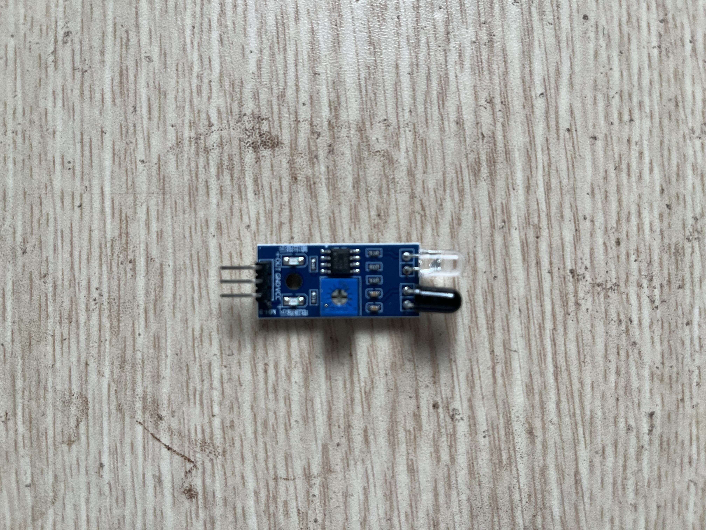

P19 Tránh vật cản
Xe tự dừng hoặc rẽ khi cảm biến phát hiện vật cản phía trước.
An toàn
Test logic tránh vật ở tốc độ thấp. Nếu dùng HC-SR04 5V, chân Echo cần chia áp trước khi vào ESP32.
Ảnh linh kiện


HC-SR04 và xe P18 chưa có trong inventory
Linh kiện dùng thế nào
| Linh kiện | Vai trò |
|---|---|
| Xe P18 | Nền di chuyển. |
| LM393 hoặc HC-SR04 | Phát hiện vật phía trước. |
| ESP32 | Chạy logic: nếu có vật thì stop/rẽ. |
Các bước làm
- Gắn sensor phía trước xe.
- Test đọc sensor khi xe đứng yên.
- Thêm rule đơn giản: có vật -> stop -> rẽ -> đi tiếp.
- Tăng tốc từ từ sau khi logic ổn.
Hoàn thành khi
- Xe tự dừng hoặc rẽ khi gặp vật.
- Bạn thấy rõ phần “sense -> decide -> act” trong robot.